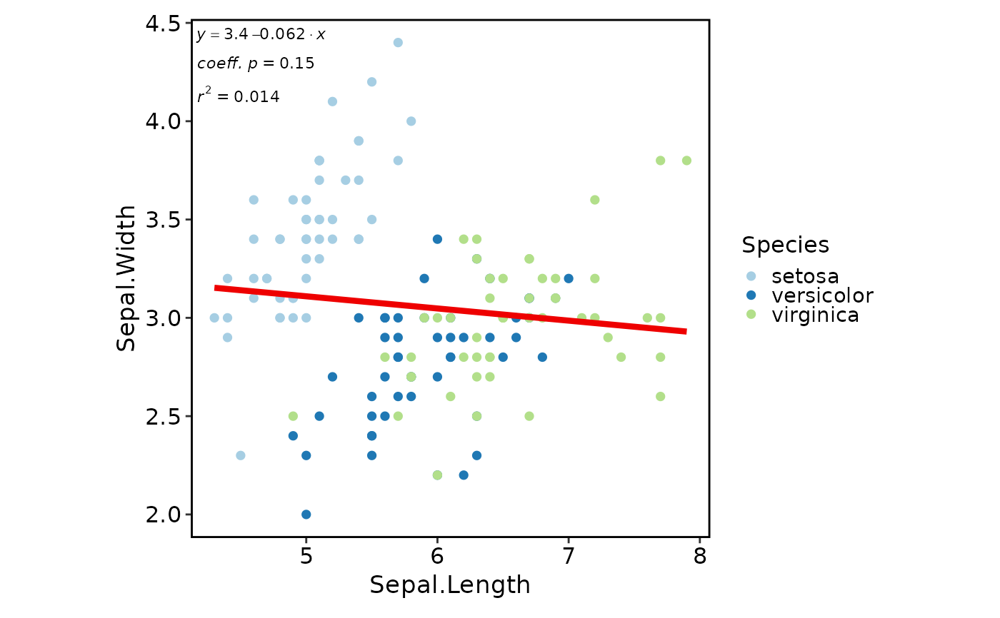
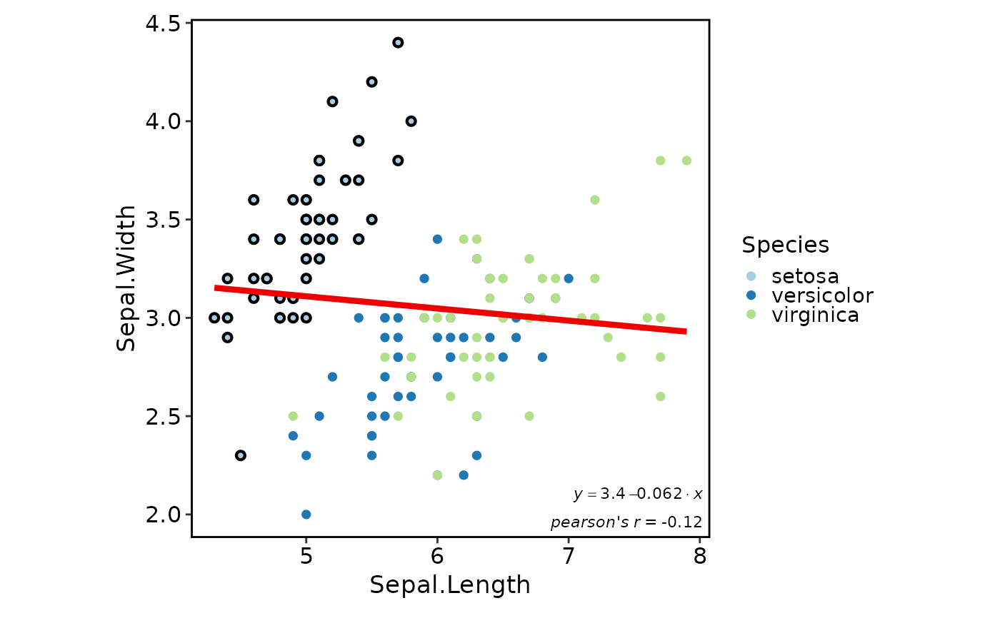
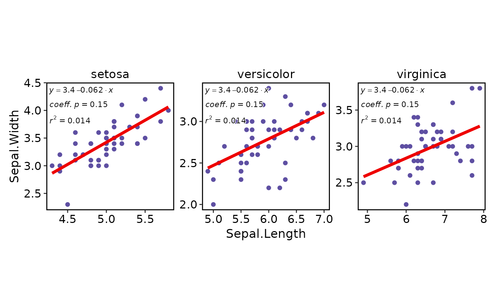
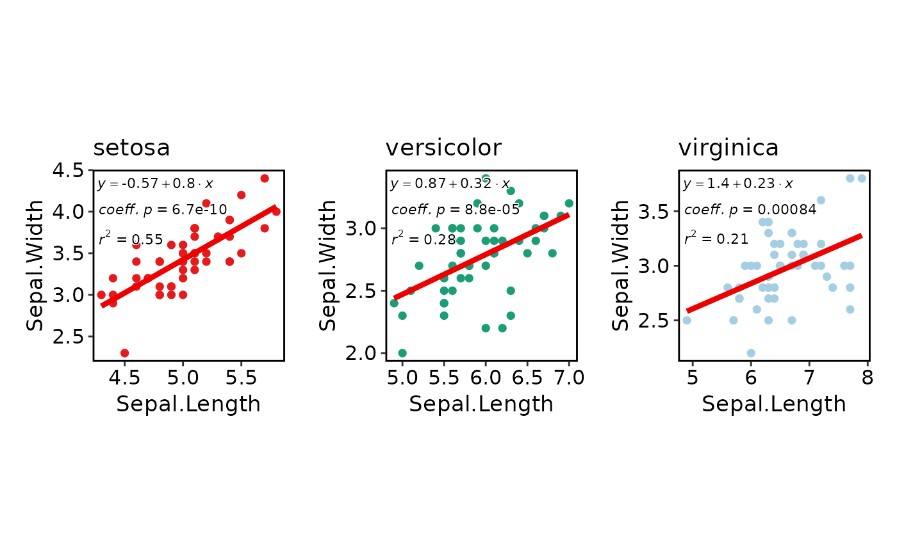

Generate scatter correlation plot for two variables.
Usage
CorPlot(
data,
x,
y,
group_by = NULL,
group_by_sep = "_",
group_name = NULL,
split_by = NULL,
split_by_sep = "_",
pt_size = 2,
pt_shape = 16,
raster = FALSE,
alpha = 1,
raster_dpi = c(512, 512),
highlight = NULL,
highlight_color = "black",
highlight_size = 1,
highlight_alpha = 1,
highlight_stroke = 0.8,
anno_items = c("eq", "r2", "p"),
anno_size = 3,
anno_fg = "black",
anno_bg = "white",
anno_bg_r = 0.1,
anno_position = c("topleft", "topright", "bottomleft", "bottomright", "tl", "tr", "bl",
"br"),
add_smooth = TRUE,
smooth_color = "red2",
smooth_width = 1.5,
smooth_se = FALSE,
theme = "theme_this",
theme_args = list(),
palette = ifelse(is.null(group_by), "Spectral", "Paired"),
palcolor = NULL,
title = NULL,
subtitle = NULL,
xlab = NULL,
ylab = NULL,
facet_by = NULL,
facet_scales = "fixed",
facet_ncol = NULL,
facet_nrow = NULL,
facet_byrow = TRUE,
aspect.ratio = 1,
legend.position = waiver(),
legend.direction = "vertical",
seed = 8525,
combine = TRUE,
nrow = NULL,
ncol = NULL,
byrow = TRUE,
axes = NULL,
axis_titles = axes,
guides = NULL,
design = NULL,
...
)Arguments
- data
A data frame.
- x
A character string specifying the column name of the data frame to plot for the x-axis.
- y
A character string specifying the column name of the data frame to plot for the y-axis.
- group_by
Columns to group the data for plotting For those plotting functions that do not support multiple groups, They will be concatenated into one column, using
group_by_sepas the separator- group_by_sep
The separator for multiple group_by columns. See
group_by- group_name
The name of the group in the legend.
- split_by
The column(s) to split data by and plot separately.
- split_by_sep
The separator for multiple split_by columns. See
split_by- pt_size
The size of the points.
- pt_shape
The shape of the points.
- raster
Whether to use raster graphics for plotting.
- alpha
A numeric value specifying the transparency of the plot.
- raster_dpi
The DPI of the raster graphics.
- highlight
The items to be highlighted. Could be either a vector of rownames if data has rownames, or a vector of indices, or An expression that can be evaluated by
dplyr::filterto get the highlighted items.- highlight_color
The color of the highlighted points.
- highlight_size
The size of the highlighted points.
- highlight_alpha
The alpha of the highlighted points.
- highlight_stroke
The stroke of the highlighted points.
- anno_items
The items to be annotated on the plot. Available items: "eq", "r2", "p", "spearman", "pearson", "kendall", "n".
- anno_size
The size of the annotation text.
- anno_fg
The color of the annotation text.
- anno_bg
The background color of the annotation text.
- anno_bg_r
The radius of the background of the annotation text.
- anno_position
The position of the annotation text. Available positions: "topleft", "topright", "bottomleft", "bottomright". Shortcuts: "tl", "tr", "bl", "br".
- add_smooth
Whether to add a linear regression line.
- smooth_color
The color of the regression line.
- smooth_width
The width of the regression line.
- smooth_se
Whether to add the standard error band to the regression line.
- theme
A character string or a theme class (i.e. ggplot2::theme_classic) specifying the theme to use. Default is "theme_this".
- theme_args
A list of arguments to pass to the theme function.
- palette
A character string specifying the palette to use. A named list or vector can be used to specify the palettes for different
split_byvalues.- palcolor
A character string specifying the color to use in the palette. A named list can be used to specify the colors for different
split_byvalues. If some values are missing, the values from the palette will be used (palcolor will be NULL for those values).- title
A character string specifying the title of the plot. A function can be used to generate the title based on the default title. This is useful when split_by is used and the title needs to be dynamic.
- subtitle
A character string specifying the subtitle of the plot.
- xlab
A character string specifying the x-axis label.
- ylab
A character string specifying the y-axis label.
- facet_by
A character string specifying the column name of the data frame to facet the plot. Otherwise, the data will be split by
split_byand generate multiple plots and combine them into one usingpatchwork::wrap_plots- facet_scales
Whether to scale the axes of facets. Default is "fixed" Other options are "free", "free_x", "free_y". See
ggplot2::facet_wrap- facet_ncol
A numeric value specifying the number of columns in the facet. When facet_by is a single column and facet_wrap is used.
- facet_nrow
A numeric value specifying the number of rows in the facet. When facet_by is a single column and facet_wrap is used.
- facet_byrow
A logical value indicating whether to fill the plots by row. Default is TRUE.
- aspect.ratio
A numeric value specifying the aspect ratio of the plot.
- legend.position
A character string specifying the position of the legend. if
waiver(), for single groups, the legend will be "none", otherwise "right".- legend.direction
A character string specifying the direction of the legend.
- seed
The random seed to use. Default is 8525.
- combine
Whether to combine the plots into one when facet is FALSE. Default is TRUE.
- nrow
A numeric value specifying the number of rows in the facet.
- ncol
A numeric value specifying the number of columns in the facet.
- byrow
A logical value indicating whether to fill the plots by row.
- axes
A string specifying how axes should be treated. Passed to
patchwork::wrap_plots(). Only relevant whensplit_byis used andcombineis TRUE. Options are:'keep' will retain all axes in individual plots.
'collect' will remove duplicated axes when placed in the same run of rows or columns of the layout.
'collect_x' and 'collect_y' will remove duplicated x-axes in the columns or duplicated y-axes in the rows respectively.
- axis_titles
A string specifying how axis titltes should be treated. Passed to
patchwork::wrap_plots(). Only relevant whensplit_byis used andcombineis TRUE. Options are:'keep' will retain all axis titles in individual plots.
'collect' will remove duplicated titles in one direction and merge titles in the opposite direction.
'collect_x' and 'collect_y' control this for x-axis titles and y-axis titles respectively.
- guides
A string specifying how guides should be treated in the layout. Passed to
patchwork::wrap_plots(). Only relevant whensplit_byis used andcombineis TRUE. Options are:'collect' will collect guides below to the given nesting level, removing duplicates.
'keep' will stop collection at this level and let guides be placed alongside their plot.
'auto' will allow guides to be collected if a upper level tries, but place them alongside the plot if not.
- design
Specification of the location of areas in the layout, passed to
patchwork::wrap_plots(). Only relevant whensplit_byis used andcombineis TRUE. When specified,nrow,ncol, andbyroware ignored. Seepatchwork::wrap_plots()for more details.- ...
Additional arguments.
Examples
data(iris)
CorPlot(iris, "Sepal.Length", "Sepal.Width", group_by = "Species")

CorPlot(iris, "Sepal.Length", "Sepal.Width", group_by = "Species",
highlight = 'Species == "setosa"', highlight_stroke = 1.5,
anno_items = c("eq", "pearson"), anno_position = "bottomright")

CorPlot(iris, "Sepal.Length", "Sepal.Width", facet_by = "Species", facet_scales = "free")

CorPlot(iris, "Sepal.Length", "Sepal.Width", split_by = "Species",
palette = c(setosa = "Set1", versicolor = "Dark2", virginica = "Paired"))
